List of Circuit Diagrams
Closed, Open, and Short Circuit Paths
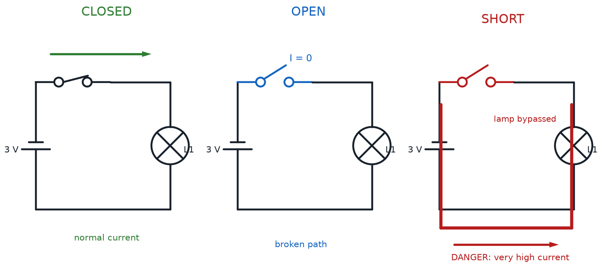
Series and Parallel Circuit Comparison
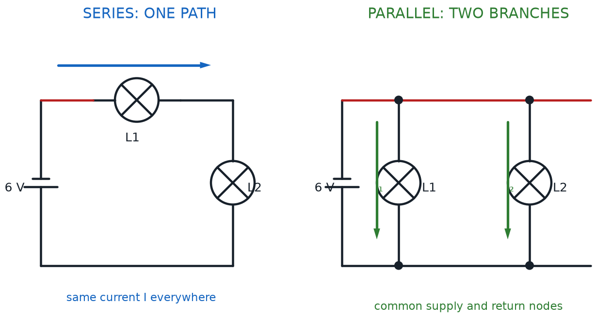
LED Forward Voltage and Current-Limiting Resistor

Fuse and Reverse-Polarity Protection Circuits

Two-Branch Current Divider
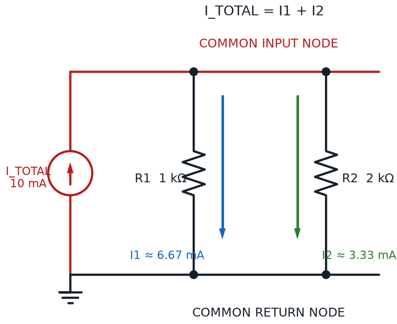
Battery EMF and Internal Resistance Model
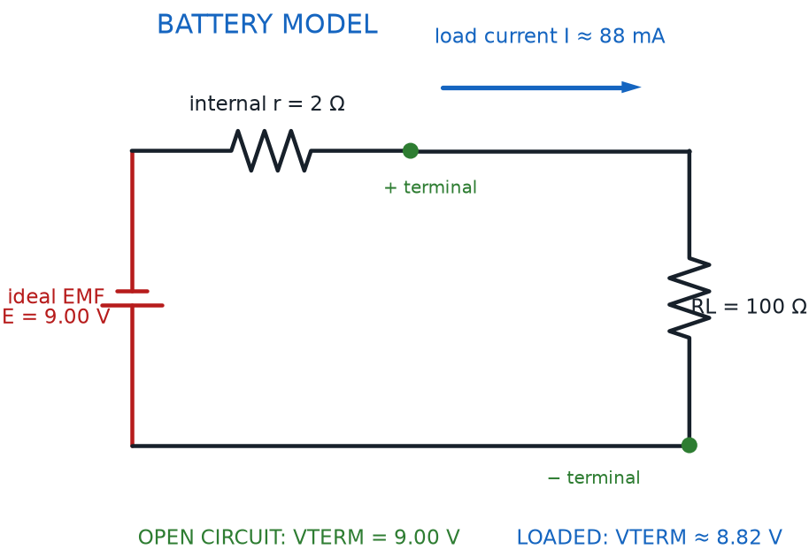
Source-Path-Load Circuit System

Power-to-Load Troubleshooting Test Points

Voltage Divider Circuit
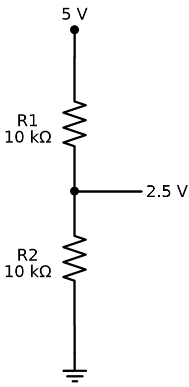
RC Charging and Discharging Circuit
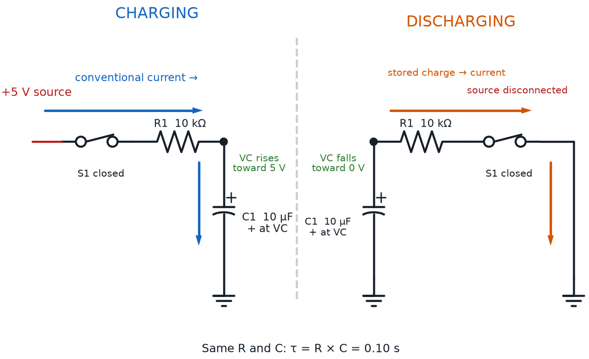
Rheostat and Thermistor Control Circuits
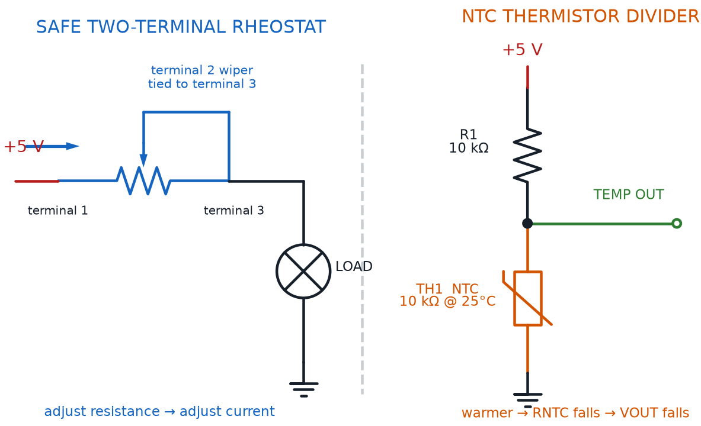
Bypass Capacitor Across IC Power Pins
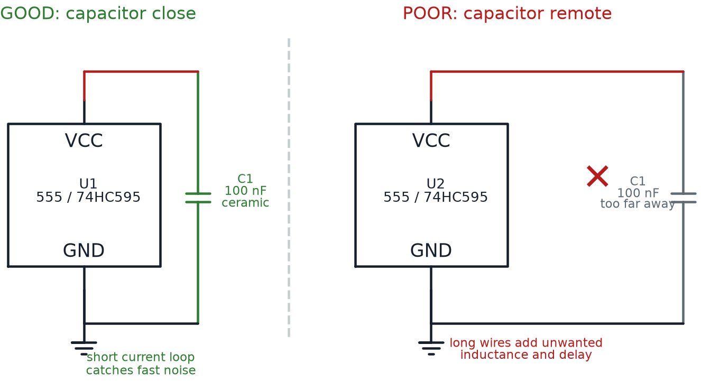
Rectifier, Flyback, and Zener Diode Circuits
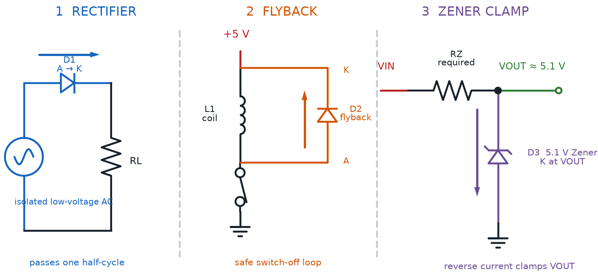
Potentiometer as an Adjustable Voltage Divider
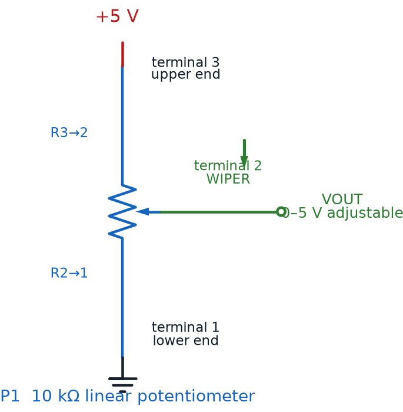
NPN Low-Side and PNP High-Side Switches

555 Timer Astable LED Circuit

555 LED Blinker and Buzzer Driver Circuits
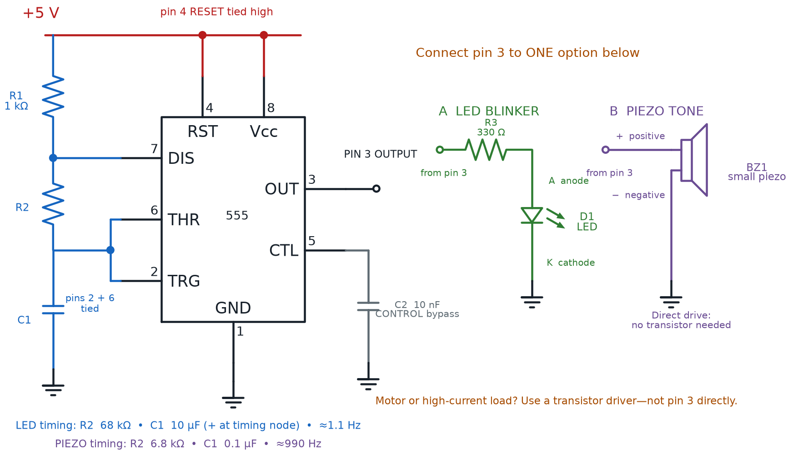
RC Push-Button Debounce Circuit
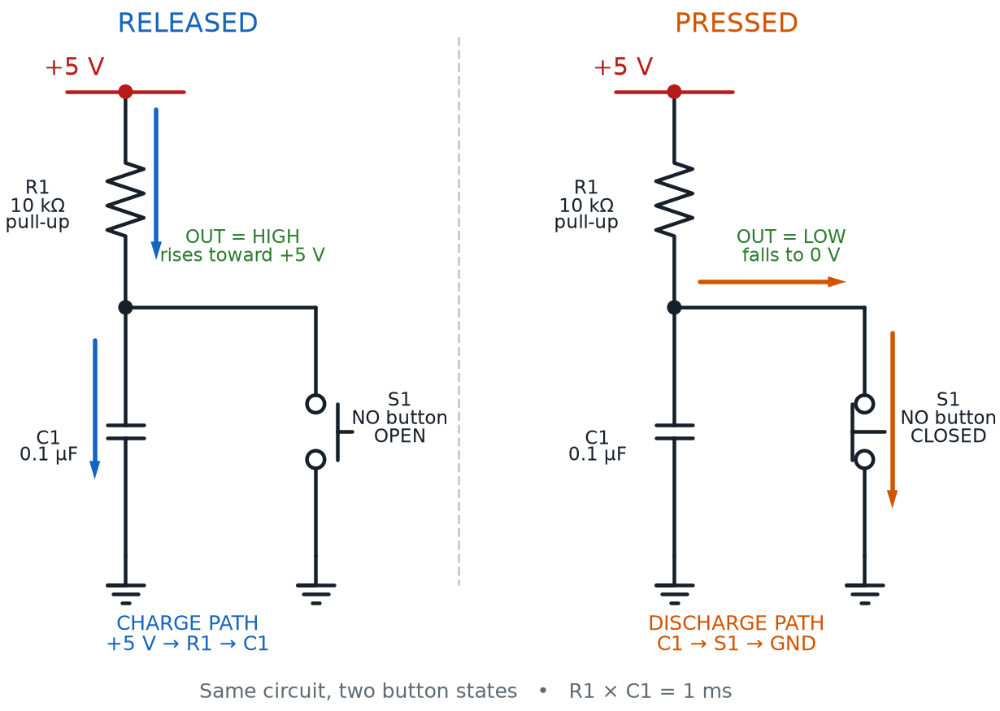
Light Detector and Dark Detector Voltage Dividers

Common-Cathode and Common-Anode RGB LED Wiring

Protected Transistor Motor Driver

Active and Passive Buzzer Driver Circuits

Series and Parallel LED Wiring

Voltage, Current, and Resistance Measurement Connections
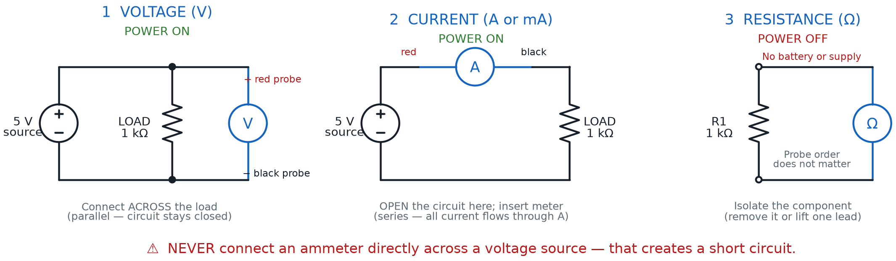
Healthy, Open, and Shorted Circuit Measurements

Linear, Buck, and Boost Regulator Topologies
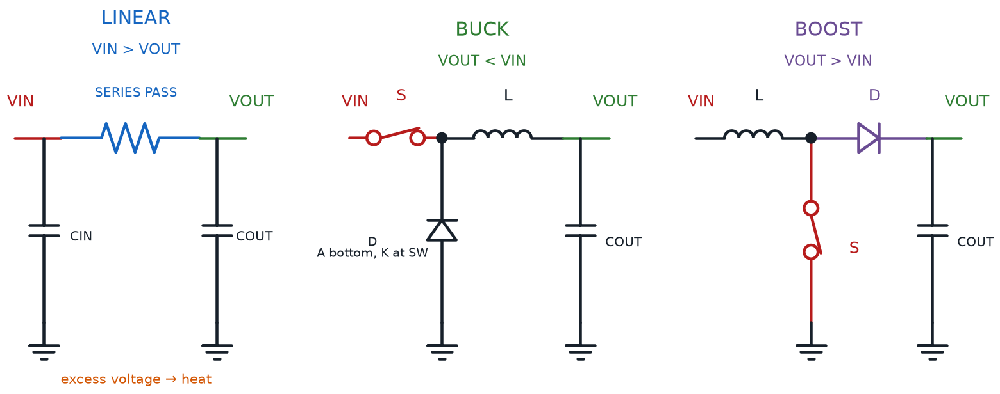
Solar Panel LiPo Charging Circuit
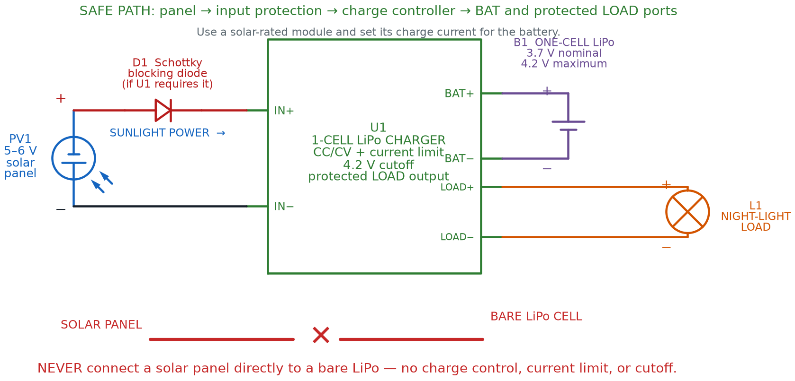
Solar Cells in Series and Parallel
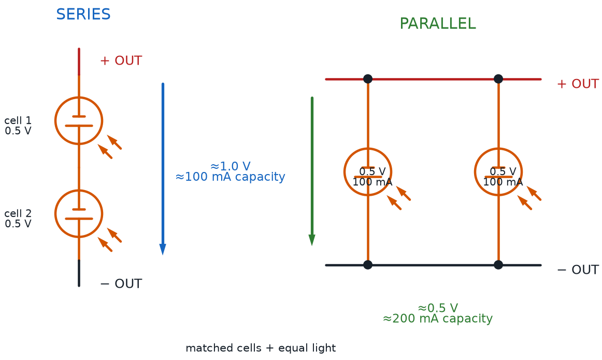
Transistor NOT, NAND, and NOR Gates

Cross-Coupled NAND RS Latch

RC Timer, 555 Oscillator, and Signal Generator
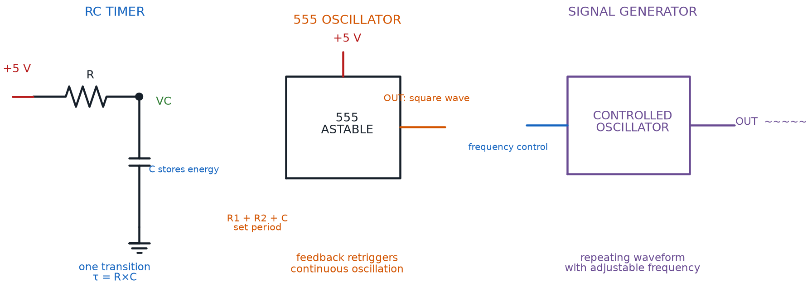